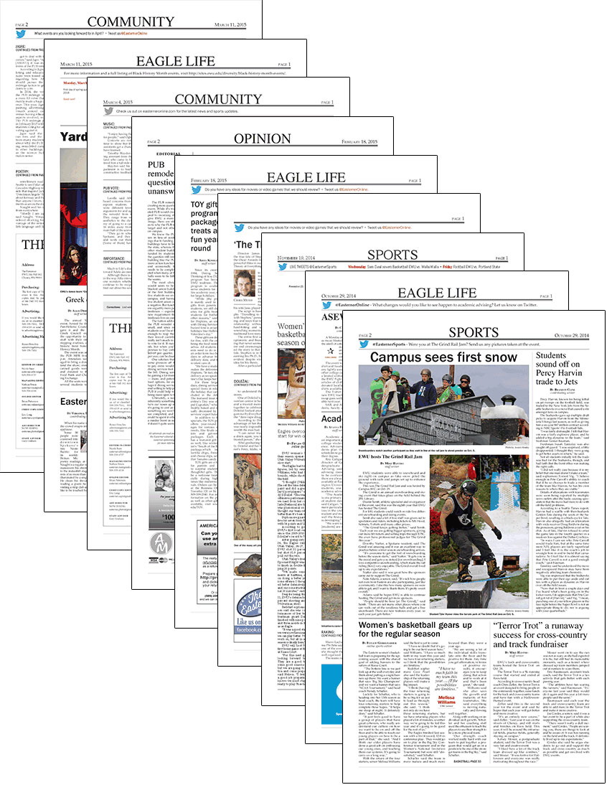

Newspaper Layout
The Easterner
workplace assignments
Context
I design one to three pages for weekly layout of “The Easterner” university newspaper. This includes using designated stories, photos, graphics, and ads to construct a layout that shows calculated hierarchy.
Skills
- Consistency in following Associated Press and in-house style
- Development of clear layout and typography
- Design graphics, in-house ads, and infographics as needed
Software/Resources
- Adobe Photoshop
- Adobe InDesign
- Adobe Illustrator
- 2014 AP Stylebook
